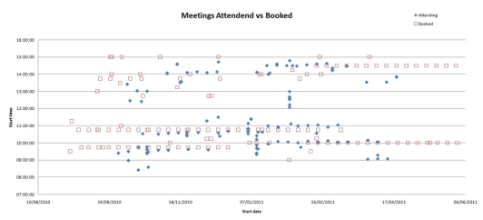

Case Study 3: To Book or Not To Book
For activity data mining to be useful it should involve cross-analysis with other databases. As well
as the Access Grid activity data showing actual connections from video conferencing meetings,
there is also an official booking system. Looking at the global statistics it can be see that only
about 20% of meetings are booked through the official system when compared to the total number
of actual meetings that have occurred. This value could be quite a lot less as it assumes all
officially booked meeting actually have occurred.
The question is how many of these booked meetings are really used within groups. We chose a
couple of research groups that have indicated to us that they actively use both the Access Grid
sessions in conjunction with the official booking service. This means the statistics should
correlate. The following plot shows the start times from the official booking times with the start
times of real meetings that have occurred at a single specified physical room node. This
illuminates a set of interesting observations and highlights the trust people put into booking
systems equating to actuality.

This leads to some illuminating observations:
- In this case most booked meetings occurred as expected with a few not occurring. Often the real meetings started a few minutes before the booking ones.
- Extra meetings often occurred outside of the booking system as expected from the global statistics.
- Follow on meetings were often not officially booked and (informally) by interview were often initiated by voice during a previous meetings.
- Extensions of meetings were also common - ad hoc meeting sessions were often organised during the meetings.
- The graph shows a test session and workshop when there were a series of short meetings on 9th January 2011.
This was an initial test data mining of the statistics and further analysis could easily be carried
out, for example analysing the change in the length of meetings as they progress across a series
could be revealing.